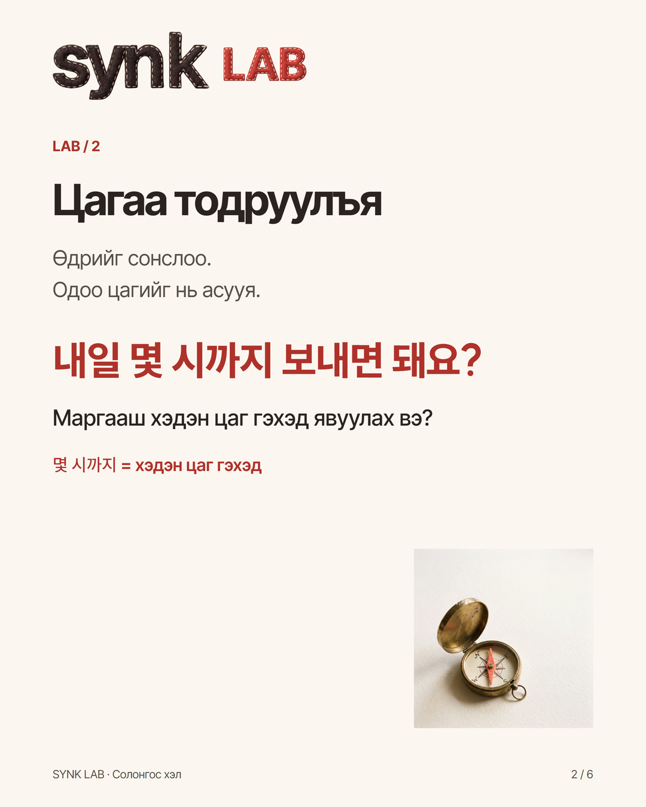
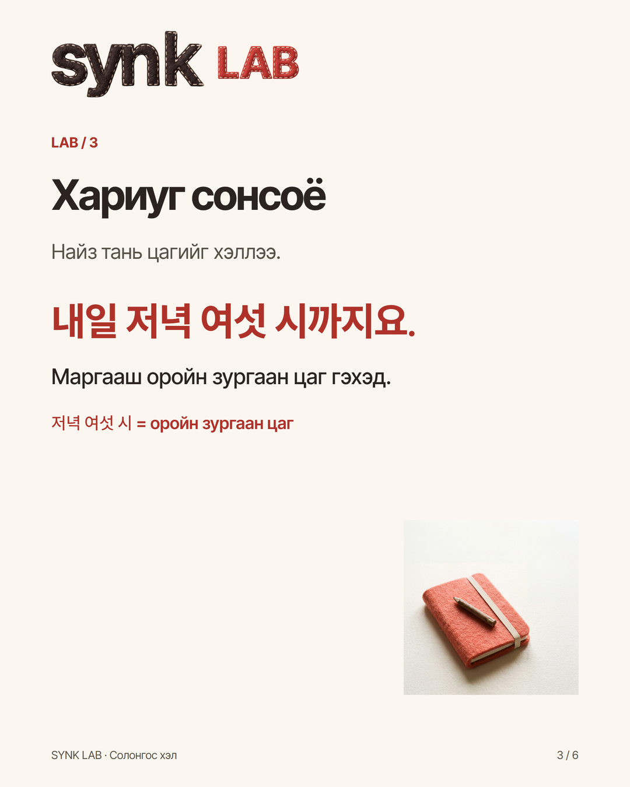
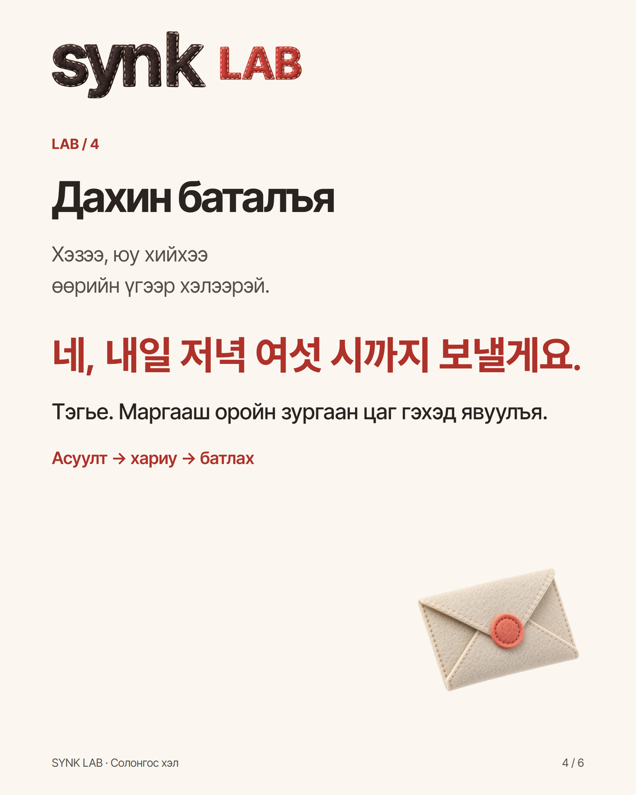
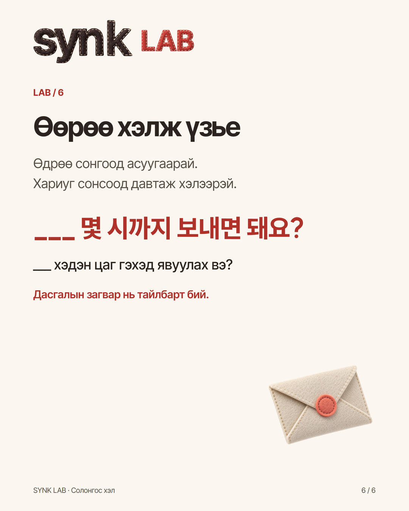

LAB · @synk.mn
Маргааш гэхэд? Хэдэн цаг гэхэд?
Найзтайгаа хамт ажиллахдаа зургаа хэдэн цаг гэхэд явуулахаа солонгосоор асууж, сонссон цагийг давтаж хэлэх дасгал. Солонгос өгүүлбэр, монгол утгатай жишээг уншаад, тайлбар дахь асуулт, хариу, батлах өгүүлбэрийн хоосон зайг нөхөж үзээрэй.
Найз тань «내일까지 사진을 보내 주세요» гэвэл яг хэдэн цаг гэхэд явуулахаа солонгосоор асууж болно.
Дасгалын жишээ: хамт хийх ажилд хэрэгтэй зургаа явуулах гэж байна.
1. «내일까지 사진을 보내 주세요.»
Зургаа маргааш гэхэд явуулаарай.
Өдрийг мэдлээ. Одоо цагийг нь асууж болно.
2. «내일 몇 시까지 보내면 돼요?»
Маргааш хэдэн цаг гэхэд явуулах вэ?
3. «내일 저녁 여섯 시까지요.»
Маргааш оройн зургаан цаг гэхэд.
4. «네, 내일 저녁 여섯 시까지 보낼게요.»
Тэгье. Маргааш оройн зургаан цаг гэхэд явуулъя.
Өөрийн өгүүлбэр:
Доорх хэсгийг хуулж, хоосон зайг нөхөөрэй.
Өдөр / 날짜: ___
Асуулт / 질문: ___ 몇 시까지 보내면 돼요?
Сонссон цаг / 들은 시간: ___
Батлах / 확인: 네, ___까지 보낼게요.
내일 = маргааш
금요일 = баасан гарагт
월요일 = даваа гарагт
Зөвхөн өдрийг солиод хэлж үзээрэй. Ганцаараа дасгал хийхдээ дээрх жишээний цагийг хэрэглэж болно. Бодит ярианд хариуг сонсоод, тохирсон цагийг давтаж хэлээрэй.
Асуулт, хариу, өөрийн өгүүлбэрээ хамтад нь уншаарай. Өдөр, цаг хоорондоо таарч байна уу?
Энэ өгүүлбэрийг хадгалаад дараагийн ажилдаа хэрэглээрэй. Дасгалыг өөртөө хийж болно; сэтгэгдэл бичих шаардлагагүй.
Та ямар өдрийг сонгох вэ?



